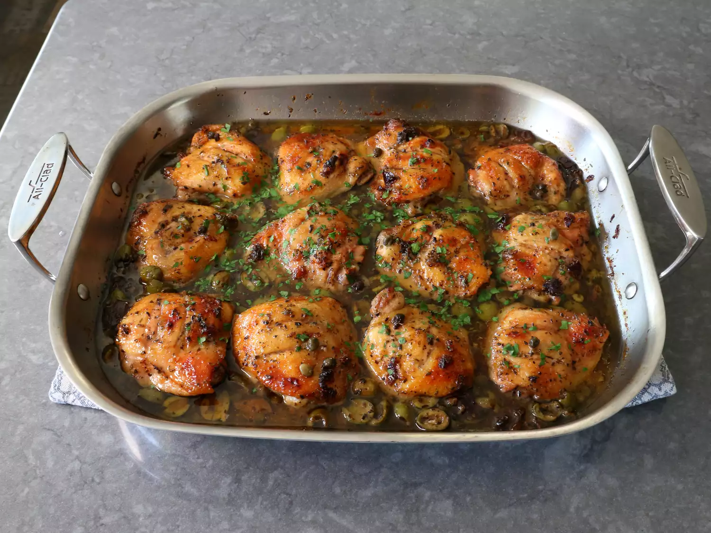

Chicken Marbella

Description
I'm very happy to be sharing my version of the
Silver Palate's famous Chicken Marbella
, which many have called
“the best chicken recipe of all time.” That's a very bold claim and there's no way to actually prove these
things one way or the other, but I would not argue against it. This really is one of the most delicious recipes
ever, chicken or otherwise. The key ingredients in this iconic dish are prunes and olives, which may sound like
a strange combo, but they help create a perfect balance of sweet, salty, and savory.
While I did adjust the ingredient amounts a bit, this is very close to the original. The only real departure
from the Silver Palate's version is the use of all thighs instead of whole, cut-up chickens. I just think it's
easier to cook pieces of chicken that all finish at the same time and won't dry out. But, whether you go with
thighs or follow the classic method, this is one dish that can't be missed, and I really do hope you give this a
try soon. Enjoy!
More recipes: Try the latest and greatest recipes from
Chef John
!
Ingredients
Marinade:
- 8 cloves garlic, crushed or minced
- 2 tablespoons dried oregano
- 1 teaspoon freshly ground black pepper
- 5 teaspoons kosher salt (use 1 teaspoon per pound of chicken used)
- 1 pinch cayenne pepper
- 4 bay leaves (optional)
- 2 tablespoons caper brine
- 1/2 cup red wine vinegar
- 1/4 cup olive oil
For the Pan:
- 12 large skin-on, bone-in chicken thighs (about 5 pounds)
- 1 cup pitted green olives, halved
- 2/3 cup chopped pitted prunes
- 1/3 cup capers
- 1 cup white wine
- 1/3 cup light brown sugar
- 1/4 cup chopped fresh parsley
Steps
- Whisk together garlic, oregano, black pepper, salt, and cayenne, bay leaves, caper juice, red wine vinegar,
and olive oil and set aside.
- Prep thighs by making two cuts about 1 1/2 inches apart, into the skin side, perpendicular to the bone, and
down to the bone.
- Scatter 1/2 of olives, prunes, and capers evenly on the bottom of the marination container.
- Place chicken over, skin side down. Whisk marinade again, and apply one generous spoonful to top of each
thigh. Flip thighs over so the skin side is up.
- Scatter over the remaining olives, prunes, and capers, and drizzle evenly with remaining marinade.
- Place a piece of parchment paper over top and press down firmly (this step is optional but will give the
best results). Cover and marinate in the refrigerator for at least 12 hours, but preferably a full 24 hours.
- Preheat the oven to 350 degrees F (180 degrees C).
- Transfer thighs skin side up into a large roasting pan, and arrange evenly in a single layer. Scatter over
remaining olives, prunes, and capers, and any remaining marinade.
- Pour in white wine, and using half the brown sugar, sprinkle the top of each thigh with a small amount.
- Roast the preheated oven for about 45 minutes. Remove from the oven, baste each thigh with pan liquids, and
sprinkle the remaining brown sugar evenly over the thighs.
- Roast in the oven until thighs are fork tender, but not falling off the bone, another 30 to 45 minutes. As
an optional step, when thighs are nearly done, you can increase the oven temperature to 425 degrees F (220
degrees C) for the last 15 minutes of cooking time for a deeper browning.
- Let cool for 15 minutes. Sprinkle with parsley before serving.
Home